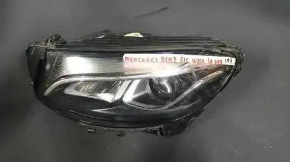

Piezas de carrocería para Mercedes-Benz GLC
13 piezas disponibles hoy para Mercedes-Benz GLC, cada una con su foto y su código: faros y lámparas delanteras (3), cubrepolvos (2), puertas (2), lámparas traseras (1). Dinos el año de tu carro y te confirmamos si le sirve.
- Garantía de 3 días
- Foto real de cada pieza
- Efectivo, Yappy o ACH
- Lunes a sábado, 8:00 a. m. a 5:00 p. m.
Faros y lámparas delanteras para Mercedes-Benz GLC 3

193GLC (W253)2016-19 · lado izquierdo · original 195GLC (254)2023-26 · lado izquierdo · original
195GLC (254)2023-26 · lado izquierdo · original LD019GLC2023-26 · lado izquierdo · original
LD019GLC2023-26 · lado izquierdo · original CP085GLC Coupé
CP085GLC Coupé PD024GLC 200
PD024GLC 200 PD038GLC 300
PD038GLC 300 371GLC X253 / W253
371GLC X253 / W253 RB048GLC W254 / X254
RB048GLC W254 / X254 DTI043GLC 300
DTI043GLC 300 R058GLC 300
R058GLC 300